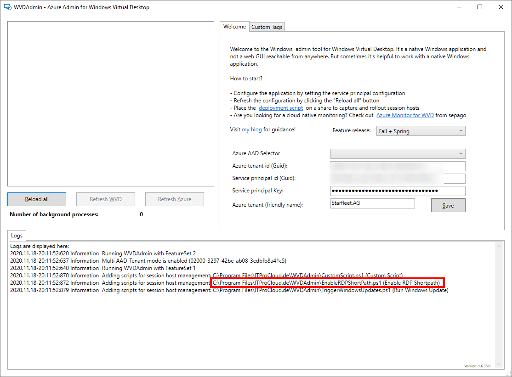

WVD Admin - Custom Scripts to run administrative tasks
Custom Scripts with WVDAdmin 
From version 1.6.15, WVDAdmin supports custom scripts to run administrative tasks simultaneously on different session hosts. And that is easy to use and to extend. Let me show it with the challenge to enable RDP Shortpath on existing session hosts.
In this post, Microsoft describes how to enable this preview feature for WVD/AVD to connect to a WVD/AVD session without crossing the internet.
Start copying the file C:\Program Files\ITProCloud.de\WVDAdmin\CustomScript.ps1 to a new name into the same directory. For example EnableRDPShortPath.ps1
Open the file with notepad or the editor of your choice. Edit the first line to give your script a name (that is visible in the drop-down list in WVDAdmin) and a description. The description is shown in the message box where you have to consent to run on the selected session hosts.
# {"Name": "Enable RDP Shortpath","Description":"This script enables the preview function for RDP Shortpath on the selected session hosts"}
After that, you can copy the code between lines 22 and 23 (LogWriter("Custom script start") and LogWriter("Custom script end")). I re-used the example code from Microsoft:
LogWriter("Custom script start")
$WinstationsKey = 'HKLM:\SYSTEM\CurrentControlSet\Control\Terminal Server\WinStations'
New-ItemProperty -Path $WinstationsKey -Name 'fUseUdpPortRedirector' -ErrorAction:SilentlyContinue -PropertyType:dword -Value 1 -Force
New-ItemProperty -Path $WinstationsKey -Name 'UdpPortNumber' -ErrorAction:SilentlyContinue -PropertyType:dword -Value 3390 -Force
New-NetFirewallRule -DisplayName 'Remote Desktop - Shortpath (UDP-In)' -Action Allow -Description 'Inbound rule for the Remote Desktop service to allow RDP traffic. [UDP 3390]' -Group '@FirewallAPI.dll,-28752' -Name 'RemoteDesktop-UserMode-In-Shortpath-UDP' -PolicyStore PersistentStore -Profile Domain, Private -Service TermService -Protocol udp -LocalPort 3390 -Program '%SystemRoot%\system32\svchost.exe' -Enabled:True
LogWriter("Custom script end")
The full script should look like this:
# {"Name": "Enable RDP Shortpath","Description":"This script enables the preview function for RDP Shortpath on the selected session hosts"}
param(
[string]$paramLogFileName="WVD.Custom.log",
[string]$paramString=""
);
# This powershell script is part of WVDAdmin - see https://blog.itprocloud.de/Windows-Virtual-Desktop-Admin/ for more information
# Current Version of this script: 1.0 - Custom Script Extension
# Write a return string to WVDAdmin with the example in the last line
# Define logfilen and dir
$LogDir="$env:windir\system32\logfiles"
$LogFile="$LogDir\$paramLogFileName"
function LogWriter($message)
{
$message="$(Get-Date ([datetime]::UtcNow) -Format "o") $message"
write-host($message)
if ([System.IO.Directory]::Exists($LogDir)) {write-output($message) | Out-File $LogFile -Append}
}
LogWriter("Custom script start")
$WinstationsKey = 'HKLM:\SYSTEM\CurrentControlSet\Control\Terminal Server\WinStations'
New-ItemProperty -Path $WinstationsKey -Name 'fUseUdpPortRedirector' -ErrorAction:SilentlyContinue -PropertyType:dword -Value 1 -Force
New-ItemProperty -Path $WinstationsKey -Name 'UdpPortNumber' -ErrorAction:SilentlyContinue -PropertyType:dword -Value 3390 -Force
New-NetFirewallRule -DisplayName 'Remote Desktop - Shortpath (UDP-In)' -Action Allow -Description 'Inbound rule for the Remote Desktop service to allow RDP traffic. [UDP 3390]' -Group '@FirewallAPI.dll,-28752' -Name 'RemoteDesktop-UserMode-In-Shortpath-UDP' -PolicyStore PersistentStore -Profile Domain, Private -Service TermService -Protocol udp -LocalPort 3390 -Program '%SystemRoot%\system32\svchost.exe' -Enabled:True
LogWriter("Custom script end")
Write-host("ScriptReturnMessage:{RDP Shortpath enabled - reboot the session hosts(s) to take effect}:ScriptReturnMessage")
Alternatively, you can load the script from here and copy it into WVDAdmin's program file folder.
To load the scripts, restart WVDAdmin. You will see multiple "Information Adding scripts for session host management in the log windows: xxxx.ps1" messages, including your new EnableRDPShortPath.ps.

To run the script on multiple hosts, go to a host pool, expand the node and click the "Session hosts" container. Select the hosts, select your script "Enable RDP Shortpath" and click on "Run script". After clicking OK, the script will be run in the system context on the session hosts. This will take a few minutes.

After that - and in this case, after the next reboot - RDP Shortpath should be available for WVD/AVD users in directly connected networks.